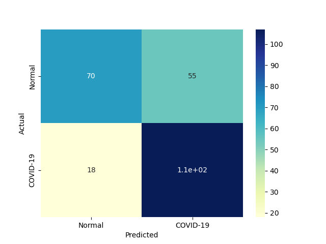

| 1 |
RealBoost |
An RealBoost classifier |
4417.011824 |
0.031248 |
107 |
70 |
55 |
18 |
0.856 |
0.560 |
0.660494 |
0.708 |
0.292 |
0.745645 |
0.993737 |
0.000169 |
23.862266 |
 |
|
|
| 0 |
DiscreteNBC |
DiscreteNBC |
360.515321 |
195.296878 |
103 |
58 |
67 |
22 |
0.824 |
0.464 |
0.605882 |
0.644 |
0.356 |
0.698305 |
0.883840 |
0.001937 |
0.003576 |
|
|
|
| 4 |
GaussianNBC |
Gaussian Naive Bayes (GaussianNB) |
3.348336 |
1.442367 |
112 |
41 |
84 |
13 |
0.896 |
0.328 |
0.571429 |
0.612 |
0.388 |
0.697819 |
0.847384 |
0.208408 |
0.483801 |
|
|
|
| 3 |
ComplementNBC |
The Complement Naive Bayes classifier described in Rennie et al |
1.910793 |
0.203145 |
105 |
47 |
78 |
20 |
0.840 |
0.376 |
0.573770 |
0.608 |
0.392 |
0.681818 |
0.835788 |
0.356825 |
3.356312 |
|
|
|
| 2 |
BernoulliNBC |
Naive Bayes classifier for multivariate Bernoulli models |
2.582877 |
0.468715 |
106 |
23 |
102 |
19 |
0.848 |
0.184 |
0.509615 |
0.516 |
0.484 |
0.636637 |
0.730691 |
0.246484 |
1.358259 |
|
|
 |
{kind=link}
{kind=link}
{kind=link}
{kind=link}
{kind=link}
{kind=link}
{kind=link}
{kind=link}
{kind=link}
{kind=link}
{kind=link}
{kind=link}
{kind=link}
{kind=link}